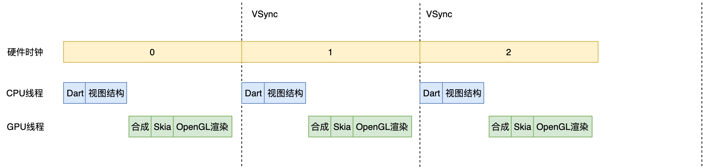
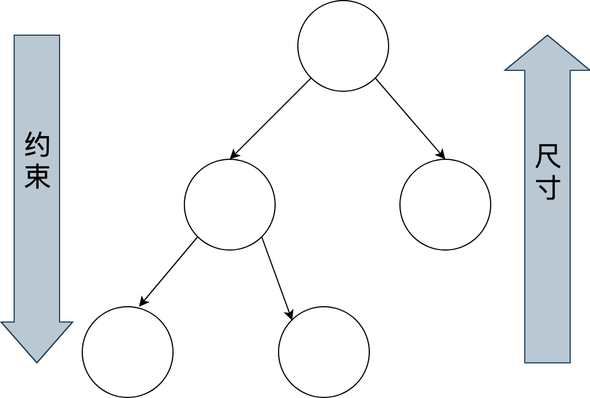
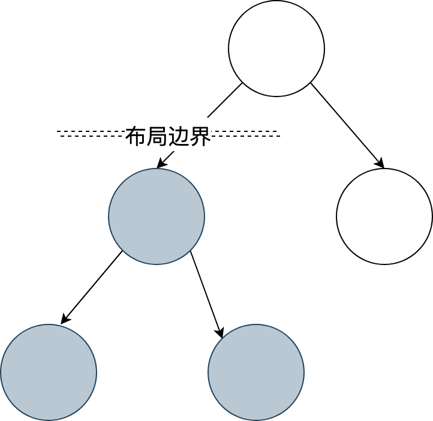
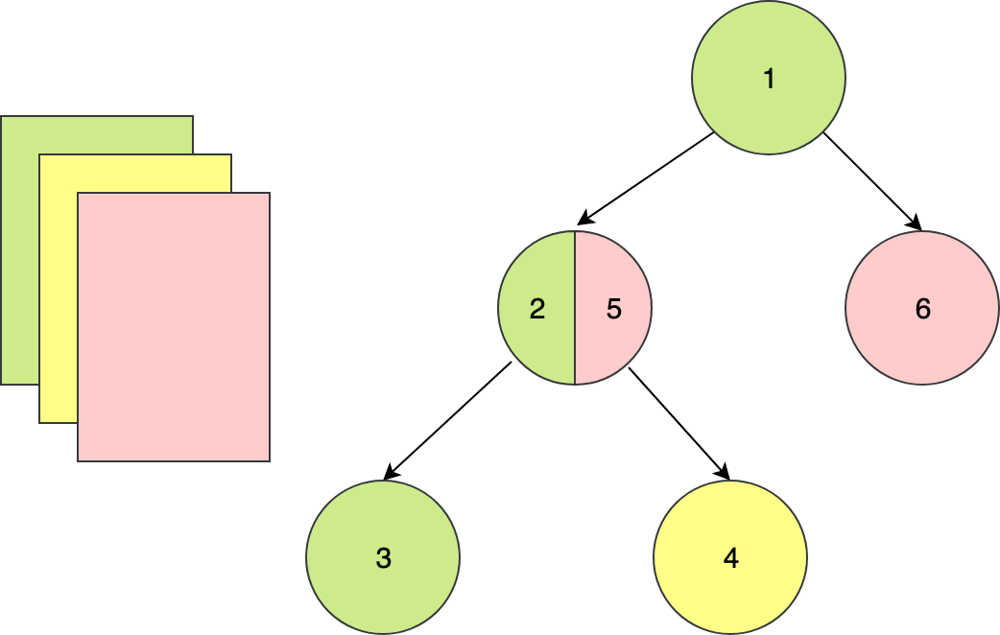
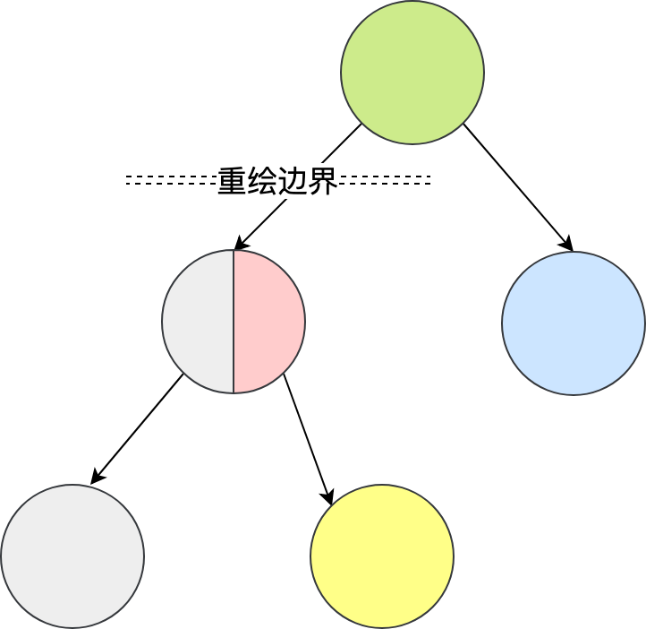
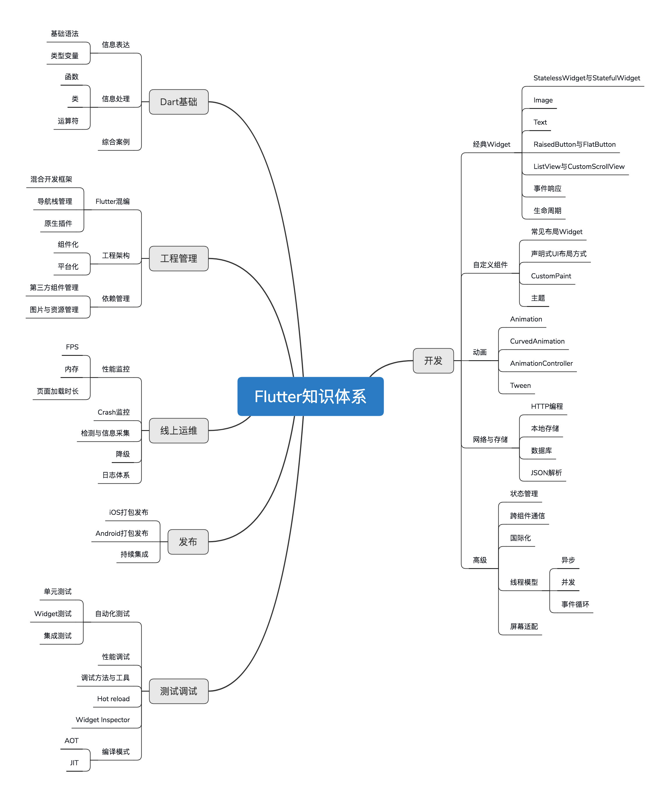

- 00 开篇词 为什么每一位大前端从业者都应该学习Flutter？.md.html
- 01 预习篇 · 从0开始搭建Flutter工程环境.md.html
- 02 预习篇 · Dart语言概览.md.html
- 03 深入理解跨平台方案的历史发展逻辑.md.html
- 04 Flutter区别于其他方案的关键技术是什么？.md.html
- 05 从标准模板入手，体会Flutter代码是如何运行在原生系统上的.md.html
- 06 基础语法与类型变量：Dart是如何表示信息的？.md.html
- 07 函数、类与运算符：Dart是如何处理信息的？.md.html
- 08 综合案例：掌握Dart核心特性.md.html
- 09 Widget，构建Flutter界面的基石.md.html
- 10 Widget中的State到底是什么？.md.html
- 11 提到生命周期，我们是在说什么？.md.html
- 12 经典控件（一）：文本、图片和按钮在Flutter中怎么用？.md.html
- 13 经典控件（二）：UITableView_ListView在Flutter中是什么？.md.html
- 14 经典布局：如何定义子控件在父容器中排版的位置？.md.html
- 15 组合与自绘，我该选用何种方式自定义Widget？.md.html
- 16 从夜间模式说起，如何定制不同风格的App主题？.md.html
- 17 依赖管理（一）：图片、配置和字体在Flutter中怎么用？.md.html
- 18 依赖管理（二）：第三方组件库在Flutter中要如何管理？.md.html
- 19 用户交互事件该如何响应？.md.html
- 20 关于跨组件传递数据，你只需要记住这三招.md.html
- 21 路由与导航，Flutter是这样实现页面切换的.md.html
- 22 如何构造炫酷的动画效果？.md.html
- 23 单线程模型怎么保证UI运行流畅？.md.html
- 24 HTTP网络编程与JSON解析.md.html
- 25 本地存储与数据库的使用和优化.md.html
- 26 如何在Dart层兼容Android_iOS平台特定实现？（一）.md.html
- 27 如何在Dart层兼容Android_iOS平台特定实现？（二）.md.html
- 28 如何在原生应用中混编Flutter工程？.md.html
- 29 混合开发，该用何种方案管理导航栈？.md.html
- 30 为什么需要做状态管理，怎么做？.md.html
- 31 如何实现原生推送能力？.md.html
- 32 适配国际化，除了多语言我们还需要注意什么_.md.html
- 33 如何适配不同分辨率的手机屏幕？.md.html
- 34 如何理解Flutter的编译模式？.md.html
- 35 Hot Reload是怎么做到的？.md.html
- 36 如何通过工具链优化开发调试效率？.md.html
- 37 如何检测并优化Flutter App的整体性能表现？.md.html
- 38 如何通过自动化测试提高交付质量？.md.html
- 39 线上出现问题，该如何做好异常捕获与信息采集？.md.html
- 40 衡量Flutter App线上质量，我们需要关注这三个指标.md.html
- 41 组件化和平台化，该如何组织合理稳定的Flutter工程结构？.md.html
- 42 如何构建高效的Flutter App打包发布环境？.md.html
- 43 如何构建自己的Flutter混合开发框架（一）？.md.html
- 44 如何构建自己的Flutter混合开发框架（二）？.md.html
- 特别放送 温故而知新，与你说说专栏的那些思考题.md.html
- 结束语 勿畏难，勿轻略.md.html
- 捐赠
04 Flutter区别于其他方案的关键技术是什么？
你好，我是陈航。
Flutter是什么？它出现的动机是什么，解决了哪些痛点？相比其他跨平台技术，Flutter的优势在哪里？……相信很多人在第一眼看到Flutter时，都会有类似的疑问。
别急，在今天的这篇文章中，我会与你介绍Flutter的历史背景和运行机制，并以界面渲染过程为例与你讲述其实现原理，让你对Flutter能够有一个全方位的认知和感受。在对Flutter有了全面了解后，这些疑问自然也就迎刃而解了。
接下来，我们就从Flutter出现的历史背景开始谈起吧。
Flutter出现的历史背景
为不同的操作系统开发拥有相同功能的应用程序，开发人员只有两个选择：
- 使用原生开发语言（即Java和Objective-C），针对不同平台分别进行开发。
- 使用跨平台解决方案，对不同平台进行统一开发。
原生开发方式的体验最好，但研发效率和研发成本相对较高；而跨平台开发方式研发虽然效率高，但为了抹平多端平台差异，各类解决方案暴露的组件和API较原生开发相比少很多，因此研发体验和产品功能并不完美。
所以，最成功的跨平台开发方案其实是依托于浏览器控件的Web。浏览器保证了99%的概率下Web的需求都是可以实现的，不需要业务将就“技术”。不过，Web最大的问题在于它的性能和体验与原生开发存在肉眼可感知的差异，因此并不适用于对体验要求较高的场景。
对于用户体验更接近于原生的React Native，对业务的支持能力却还不到浏览器的5%，仅适用于中低复杂度的低交互类页面。面对稍微复杂一点儿的交互和动画需求，开发者都需要case by case地去review，甚至还可能要通过原生代码去扩展才能实现。
这些因素，也就导致了虽然跨平台开发从移动端诞生之初就已经被多次提及，但到现在也没有被很好地解决。
带着这些问题，我们终于迎来了本次专栏的主角——Flutter。
Flutter是构建Google物联网操作系统Fuchsia的SDK，主打跨平台、高保真、高性能。开发者可以通过 Dart语言开发App，一套代码可以同时运行在 iOS 和 Android平台。 Flutter使用Native引擎渲染视图，并提供了丰富的组件和接口，这无疑为开发者和用户都提供了良好的体验。
从2017年5月，谷歌公司发布的了Alpha版本的Flutter，到2018年底Flutter Live发布的1.0版本，再到现在最新的1.5版本（截止至2019年7月1日），Flutter正在赢得越来越多的关注。
很多人开始感慨，跨平台技术似乎终于迎来了最佳解决方案。那么，接下来我们就从原理层面去看看，Flutter是如何解决既有跨平台开发方案问题的。
Flutter是怎么运转的？
与用于构建移动应用程序的其他大多数框架不同，Flutter是重写了一整套包括底层渲染逻辑和上层开发语言的完整解决方案。这样不仅可以保证视图渲染在Android和iOS上的高度一致性（即高保真），在代码执行效率和渲染性能上也可以媲美原生App的体验（即高性能）。
这，就是Flutter和其他跨平台方案的本质区别：
- React Native之类的框架，只是通过JavaScript虚拟机扩展调用系统组件，由Android和iOS系统进行组件的渲染；
- Flutter则是自己完成了组件渲染的闭环。
那么，Flutter是怎么完成组件渲染的呢？这需要从图像显示的基本原理说起。
在计算机系统中，图像的显示需要CPU、GPU和显示器一起配合完成：CPU负责图像数据计算，GPU负责图像数据渲染，而显示器则负责最终图像显示。
CPU把计算好的、需要显示的内容交给GPU，由GPU完成渲染后放入帧缓冲区，随后视频控制器根据垂直同步信号（VSync）以每秒60次的速度，从帧缓冲区读取帧数据交由显示器完成图像显示。
操作系统在呈现图像时遵循了这种机制，而Flutter作为跨平台开发框架也采用了这种底层方案。下面有一张更为详尽的示意图来解释Flutter的绘制原理。

图1 Flutter绘制原理
可以看到，Flutter关注如何尽可能快地在两个硬件时钟的VSync信号之间计算并合成视图数据，然后通过Skia交给GPU渲染：UI线程使用Dart来构建视图结构数据，这些数据会在GPU线程进行图层合成，随后交给Skia引擎加工成GPU数据，而这些数据会通过OpenGL最终提供给GPU渲染。
在进一步学习Flutter之前，我们有必要了解下构建Flutter的关键技术，即Skia和Dart。
Skia是什么？
要想了解Flutter，你必须先了解它的底层图像渲染引擎Skia。因为，Flutter只关心如何向GPU提供视图数据，而Skia就是它向GPU提供视图数据的好帮手。
Skia是一款用C++开发的、性能彪悍的2D图像绘制引擎，其前身是一个向量绘图软件。2005年被Google公司收购后，因为其出色的绘制表现被广泛应用在Chrome和Android等核心产品上。Skia在图形转换、文字渲染、位图渲染方面都表现卓越，并提供了开发者友好的API。
因此，架构于Skia之上的Flutter，也因此拥有了彻底的跨平台渲染能力。通过与Skia的深度定制及优化，Flutter可以最大限度地抹平平台差异，提高渲染效率与性能。
底层渲染能力统一了，上层开发接口和功能体验也就随即统一了，开发者再也不用操心平台相关的渲染特性了。也就是说，Skia保证了同一套代码调用在Android和iOS平台上的渲染效果是完全一致的。
为什么是Dart？
除了我们在第2篇预习文章“预习篇 · Dart语言概览”中提到的，Dart因为同时支持AOT和JIT，所以具有运行速度快、执行性能好的特点外，Flutter为什么选择了Dart，而不是前端应用的准官方语言JavaScript呢？这个问题很有意思，但也很有争议。
很多人说，选择Dart是Flutter推广的一大劣势，毕竟多学一门新语言就多一层障碍。想想Java对Android，JavaScript对NodeJS的推动，如果换个语言可能就不一样了。
但，Google公司给出的原因很简单也很直接：Dart语言开发组就在隔壁，对于Flutter需要的一些语言新特性，能够快速在语法层面落地实现；而如果选择了JavaScript，就必须经过各种委员会和浏览器提供商漫长的决议。
事实上，Flutter的确得到了兄弟团队的紧密支持。2018年2月发布的Dart 2.0，2018年12月发布的Dart 2.1，2019年2月发布的Dart 2.2，2019年5月发布的Dart2.3，每次发布都包含了为Flutter量身定制的诸多改造（比如，改进的AOT性能、更智能的类型隐式转换等）。
当然，Google公司选择使用Dart作为Flutter的开发语言，我想还有其他更有说服力的理由：
- Dart同时支持即时编译JIT和事前编译AOT。在开发期使用JIT，开发周期异常短，调试方式颠覆常规（支持有状态的热重载）；而发布期使用AOT，本地代码的执行更高效，代码性能和用户体验也更卓越。
- Dart作为一门现代化语言，集百家之长，拥有其他优秀编程语言的诸多特性（比如，完善的包管理机制）。也正是这个原因，Dart的学习成本并不高，很容易上手。
- Dart避免了抢占式调度和共享内存，可以在没有锁的情况下进行对象分配和垃圾回收，在性能方面表现相当不错。
Dart是一门优秀的现代语言，最初设计也是为了取代JavaScript成为Web开发的官方语言。竞争对手如此强劲，最后的结果可想而知。这，也是为什么相比于其他热门语言，Dart的生态要冷清不少的原因。
而随着Flutter的发布，Dart开始转型，其自身定位也发生了变化，专注于改善构建客户端应用程序的体验，因此越来越多的开发者开始慢慢了解、学习这门语言，并共同完善它的生态。凭借着Flutter的火热势头，辅以Google强大的商业运作能力，相信转型后的Dart前景会非常光明。
Flutter的原理
在了解了Flutter的基本运作机制后，我们再来深入了解一下Flutter的实现原理。
首先，我们来看一下Flutter的架构图。我希望通过这张图以及对应的解读，你能在开始学习的时候就建立起对Flutter的整体印象，能够从框架设计和实现原理的高度去理解Flutter区别其他跨平台解决方案的关键所在，为后面的学习打好基础，而不是直接一上来就陷入语言和框架的功能细节“泥潭”而无法自拔。

图2 Flutter架构图
备注：此图引自Flutter System Overview
Flutter架构采用分层设计，从下到上分为三层，依次为：Embedder、Engine、Framework。
- Embedder是操作系统适配层，实现了渲染Surface设置，线程设置，以及平台插件等平台相关特性的适配。从这里我们可以看到，Flutter平台相关特性并不多，这就使得从框架层面保持跨端一致性的成本相对较低。
- Engine层主要包含Skia、Dart和Text，实现了Flutter的渲染引擎、文字排版、事件处理和Dart运行时等功能。Skia和Text为上层接口提供了调用底层渲染和排版的能力，Dart则为Flutter提供了运行时调用Dart和渲染引擎的能力。而Engine层的作用，则是将它们组合起来，从它们生成的数据中实现视图渲染。
- Framework层则是一个用Dart实现的UI SDK，包含了动画、图形绘制和手势识别等功能。为了在绘制控件等固定样式的图形时提供更直观、更方便的接口，Flutter还基于这些基础能力，根据Material和Cupertino两种视觉设计风格封装了一套UI组件库。我们在开发Flutter的时候，可以直接使用这些组件库。
接下来，我以界面渲染过程为例，和你介绍Flutter是如何工作的。
页面中的各界面元素（Widget）以树的形式组织，即控件树。Flutter通过控件树中的每个控件创建不同类型的渲染对象，组成渲染对象树。而渲染对象树在Flutter的展示过程分为四个阶段：布局、绘制、合成和渲染。
布局
Flutter采用深度优先机制遍历渲染对象树，决定渲染对象树中各渲染对象在屏幕上的位置和尺寸。在布局过程中，渲染对象树中的每个渲染对象都会接收父对象的布局约束参数，决定自己的大小，然后父对象按照控件逻辑决定各个子对象的位置，完成布局过程。

图3 Flutter布局过程
为了防止因子节点发生变化而导致整个控件树重新布局，Flutter加入了一个机制——布局边界（Relayout Boundary），可以在某些节点自动或手动地设置布局边界，当边界内的任何对象发生重新布局时，不会影响边界外的对象，反之亦然。

图4 Flutter布局边界
绘制
布局完成后，渲染对象树中的每个节点都有了明确的尺寸和位置。Flutter会把所有的渲染对象绘制到不同的图层上。与布局过程一样，绘制过程也是深度优先遍历，而且总是先绘制自身，再绘制子节点。
以下图为例：节点1在绘制完自身后，会再绘制节点2，然后绘制它的子节点3、4和5，最后绘制节点6。

图5 Flutter 绘制示例
可以看到，由于一些其他原因（比如，视图手动合并）导致2的子节点5与它的兄弟节点6处于了同一层，这样会导致当节点2需要重绘的时候，与其无关的节点6也会被重绘，带来性能损耗。
为了解决这一问题，Flutter提出了与布局边界对应的机制——重绘边界（Repaint Boundary）。在重绘边界内，Flutter会强制切换新的图层，这样就可以避免边界内外的互相影响，避免无关内容置于同一图层引起不必要的重绘。

图6 Flutter重绘边界
重绘边界的一个典型场景是Scrollview。ScrollView滚动的时候需要刷新视图内容，从而触发内容重绘。而当滚动内容重绘时，一般情况下其他内容是不需要重绘的，这时候重绘边界就派上用场了。
合成和渲染
终端设备的页面越来越复杂，因此Flutter的渲染树层级通常很多，直接交付给渲染引擎进行多图层渲染，可能会出现大量渲染内容的重复绘制，所以还需要先进行一次图层合成，即将所有的图层根据大小、层级、透明度等规则计算出最终的显示效果，将相同的图层归类合并，简化渲染树，提高渲染效率。
合并完成后，Flutter会将几何图层数据交由Skia引擎加工成二维图像数据，最终交由GPU进行渲染，完成界面的展示。这部分内容，我已经在前面的内容中介绍过，这里就不再赘述了。
接下来，我们再看看学习Flutter，都需要学习哪些知识。
学习Flutter需要掌握哪些知识？
终端设备越来越碎片化，需要支持的操作系统越来越多，从研发效率和维护成本综合考虑，跨平台开发一定是未来大前端的趋势，我们应该拥抱变化。而Flutter提供了一套彻底的移动跨平台方案，也确实弥补了如今跨平台开发框架的短板，解决了业界痛点，极有可能成为跨平台开发领域的终极解决方案，前途非常光明。
那么，我们学习Flutter都需要掌握哪些知识呢？
我按照App的开发流程（开发、调试测试、发布与线上运维）将Flutter的技术栈进行了划分，里面几乎包含了Flutter开发需要的所有知识点。而这些所有知识点，我会在专栏中为你一一讲解。掌握了这些知识点后，你也就具备了企业级应用开发的必要技能。
这些知识点，如下图所示：

图7 Flutter知识体系
有了这张图，你是否感觉到学习Flutter的路线变得更加清晰了呢？
小结
今天，我带你了解了Flutter的历史背景与运行机制，并以界面渲染过程为例，从布局、绘制、合成和渲染四个阶段讲述了Flutter的实现原理。此外，我向你介绍了构建Flutter底层的关键技术：Skia与Dart，它们是Flutter有别于其他跨平台开发方案的核心所在。
最后，我梳理了一张Flutter学习思维导图，围绕一个应用的迭代周期介绍了Flutter相关的知识点。我希望通过这个专栏，能和你把Flutter背后的设计原理和知识体系讲清楚，让你能对Flutter有一个整体感知。这样，在你学完这个专栏以后，就能够具备企业级应用开发的理论基础与实践。
思考题
你是如何理解Flutter的三大特点：跨平台、高保真、高性能的？你又打算怎么学习这个专栏呢？
欢迎你在评论区给我留言分享你的观点，我会在下一篇文章中等待你！感谢你的收听，也欢迎你把这篇文章分享给更多的朋友一起阅读。
© 2019 - 2023 Liangliang Lee. Powered by gin and hexo-theme-book.